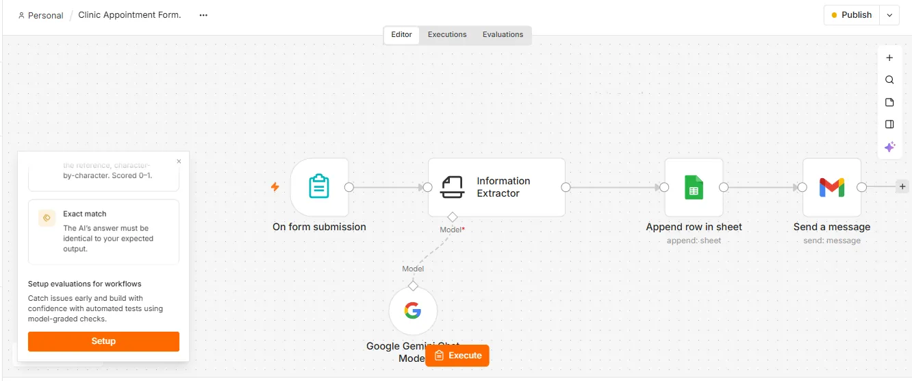
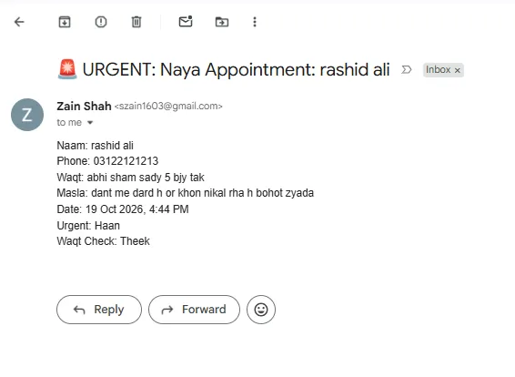
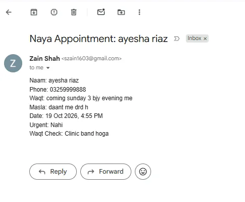
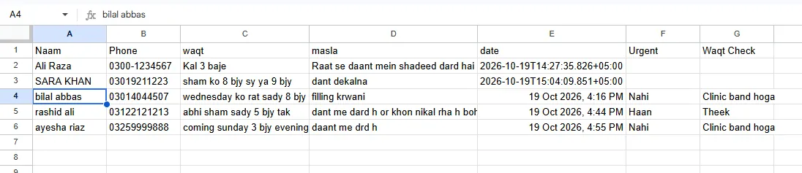
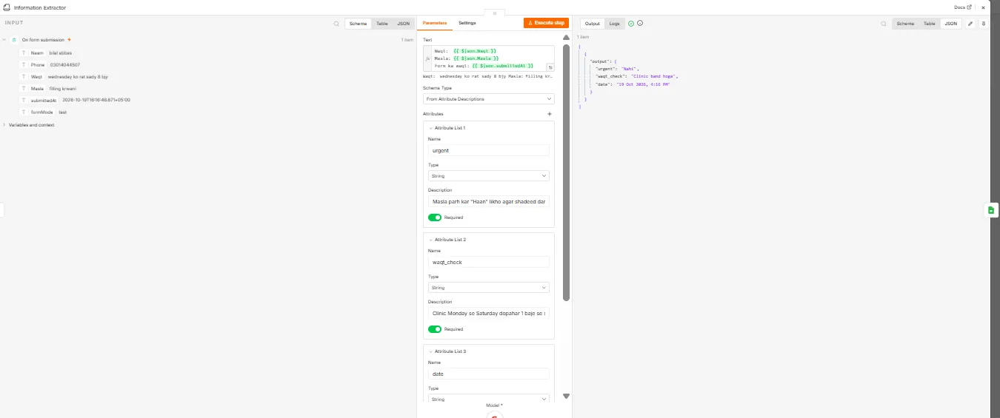

AI Receptionist for a Dental Clinic
Built for a sample clinic, "Areesha Dental Clinic", Model Town Link Road, Lahore. Patient names and numbers shown are test data.
The problem
A receptionist reads every appointment request by hand, copies names and numbers into a register, and has to judge which patient needs urgent attention. Requests that come in after hours wait until morning.
The solution
An online appointment form connected to an n8n workflow. Google Gemini reads each request, flags emergencies, checks clinic hours, and the details land in a Google Sheet with an email alert to the doctor within seconds, day or night.
How it works
- Patient fills the form with name, phone, preferred time and problem.
- Gemini AI reads the request and returns three decisions: is it urgent, is the clinic open at that time, and a clean date.
- Google Sheets gets a new row with the patient details and the AI's decisions.
- Gmail alerts the doctor. Urgent cases arrive with a 🚨 URGENT subject so they stand out in the inbox.
What the AI decided in testing
| Patient wrote | Asked time | Urgent | Time check |
|---|---|---|---|
| Tooth pain and bleeding, a lot | Today 5:30 pm | Haan | Theek |
| Wants a filling | Wednesday 8:30 pm | Nahi | Clinic band hoga |
| Tooth pain | Sunday 3 pm | Nahi | Clinic band hoga |
Rules given to the AI: clinic open Monday to Saturday, 1 pm to 6 pm; severe pain, swelling or bleeding counts as urgent. The definition of "urgent" is agreed with the doctor before going live.




